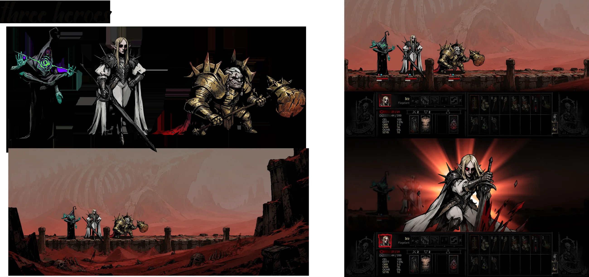
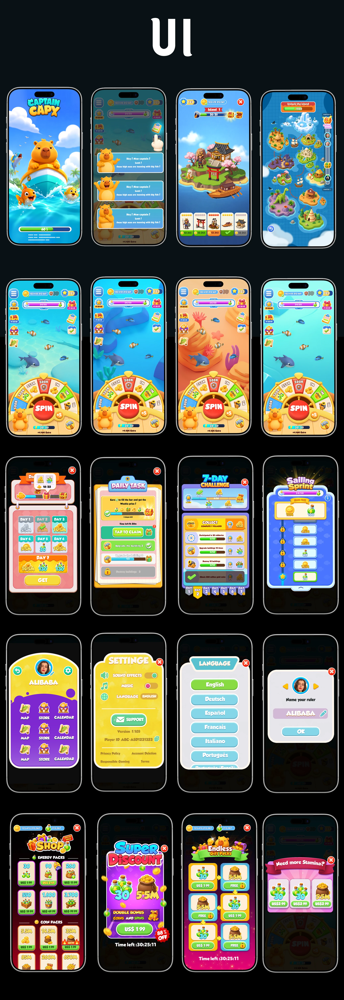

08CURRENT
卓瀚科技
执行主美负责中度手游所有美术相关工作的审核，制作 UI 原画，保证项目视觉方向与素材质量。

熊宇枭 · 游戏原画设计师
CHARACTER DESIGN / GAME ART / VISUAL STORYTELLING
从角色设定、皮肤与立绘，到游戏内视觉和宣传素材。以有辨识度的造型和清晰的设计逻辑，让每一个角色走进玩家的视野。
01 / FEATURED PROJECTS
角色、设定与游戏世界。从创意草图到最终画面，展示不同视觉风格下的设计能力。
PROJECT SPOTLIGHT / COMPLETE GAME VISUAL
CAPTAIN CAPY
Captain Capy 手游视觉设计
本项目的 UI、GUI、角色设计、场景等视觉内容，均由本人独立完成。下方展示完整长图，可打开后滚动浏览并进一步放大细节。

让每一笔设定，
都成为世界的一部分。
02 / ART ARCHIVE
点击任意作品查看完整大图。按方向筛选，快速浏览角色设定、世界视觉、宣传图和游戏界面。
03 / CAREER TIMELINE
从角色原画到执行主美，历经不同品类与制作阶段。以下按简历中的任职时间逐段列出职责与项目。
负责中度手游所有美术相关工作的审核，制作 UI 原画，保证项目视觉方向与素材质量。
参与二合、三消类游戏图标的设计与细化，并绘制项目宣传图。
设计角色皮肤与 Symbols，绘制宣传图、加载画面及主视觉（KV）等游戏美术素材。
负责项目角色立绘与角色设计，参与 3D 卡牌对战、休闲手游及皇室战争风格方向的角色视觉制作。
进行角色与角色皮肤设计、立绘绘制；对接不同部门，推动原画在项目中落地。
绘制项目角色立绘和角色设计，参与动画补面及特效关键帧绘制。
承担角色立绘与设定、动画补面和特效关键帧，并绘制场景小物件、休闲游戏美术及等级、技能、装备图标。
根据项目需求绘制角色原画、装备图标等游戏美术素材。
04 / ABOUT THE ARTIST
热爱游戏，也热爱把抽象的想法变成可感知的角色与世界。
具备角色原画、皮肤、立绘、宣传视觉及游戏 UI 的项目经验。熟悉多种画风切换，重视跨部门沟通与设计落地；也会使用 AI 工具辅助概念探索与工作流程。
05 / LET'S CONNECT
正在寻找游戏原画设计师岗位及合适的项目合作机会。